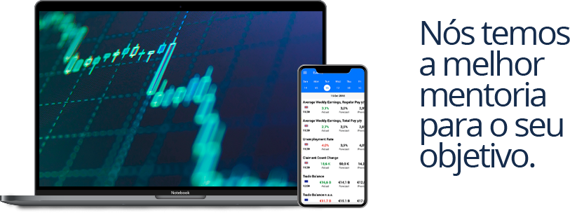

Opções Binárias
As Opções Binárias são um produto financeiro onde apostamos na subida ou descida de um preço de um ativo financeiro. Ao contrário da Bolsa não compramos o ativo. Aqui apenas nos interessa o preço deste ativo, o que torna este tipo de investimento diferente de todos. Existem duas hipóteses, o preço subir ou descer. Ao colocar uma operação escolhemos uma das direções e um tempo de expiração. Se acertarmos o lucro será em média 80%. Se falharmos, o custo será a perda do valor apostado. As diferenças entre as Opções Binárias e outros produtos é não comprar nenhum ativo e a rapidez. Pode, por isso potenciar uma média de lucros acima de outros mercados.
B3
A B3 é a responsável pela bolsa de valores no Brasil. Além disso, incorpora também a bolsa de mercadorias e futuros. Além da Cetip, uma instituição de custódia de títulos públicos e privados. A empresa fornece serviços criação e administração de sistema de negociação, compensação, liquidação, depósitos e registros para diferentes classes de ativos. Na bolsa de valores é possível negociar desde ações até ativos complexos, como os derivativos. Também é possível negociar moedas estrangeiras e commidities
Lukas Trader
Analista gráfico e especulador da B3
Seja bem-vindo a minha página, sou conhecido nesse mercado como "Canguinha Trader", sou trader profissional na bolsa de valores (B3) e opções binárias, sou formado pela Faculdade Trader, ministrada por Emanuel Santos, mais conhecido como "Cangaceiro", um dos melhores traders na atualidade em opções binárias e em B3 pelo curso do Guilherme Augusto um dos mais renomeados traders do Brasil em Mini índice. Essa forma de trabalho, requer bastante disciplina, dedicação e sangue frio para poder está fazendo as operações... na qual, cada operação feita, deve ser bem analisada e calculada para que evite perder o valor investido ou parte dele e lucre com a operação. Quer saber como faço isso no mercado financeiro? Veja abaixo as datas e cidades das minhas próximas mentorias presencias. Caso sua cidade não esteja ai, fique tranquilo, temos mentoria online particular e em grupo!
Pilares de um Trader
- Gerenciamento
- Psicológico
- Operacional
Regras de um Trader
- O mercado é soberano
- Respeite seu gerenciamento
- Nunca Transforme uma vitória em uma derrota
- Seja você mesmo, não tente ser outra pessoa
- Desenvolva uma metodologia e fique com ela. Não mude de metodologia de um dia para o outro
- A sua maior perda nunca pode superar o seu maior ganho
Mentorias
| Cidade | Data |
|---|---|
| Balneário Caboriú-SC | 01/07/2020 |
| Itapema-SC | 15/07/2020 |
| Itajaí-SC | 20/07/2020 |
| Petrolina-PE | 25/07/2020 |
|
|
Lukas Mudo
Fone: (87) 99977 2604 Instagram:@lukas_mudo |